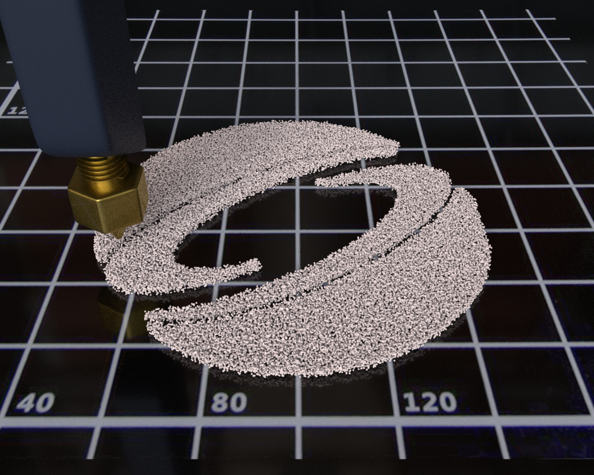

|

|
|
Abstract:
We assume that the viscous forces in any liquid are simultaneously local and non-local, and introduce the extended POM-POM model [Mcleish and Larson 1998; Oishi et al. 2012; Verbeeten et al. 2001] to computer graphics to design a unified constitutive model for viscosity that generalizes prior models, such as Oldroyd-B, the Upper-convected Maxwell (UCM) model [Sadeghy et al. 2005], and classical Newtonian viscosity under one umbrella, recovering each of them with different parameter values. Implicit discretization of our model via backward Euler recovers the variational Stokes solver of [Larionov et al. 2017] for Newtonian viscosity. For greater accuracy, however, we introduce the second-order accurate Generalized Single Step Single Solve (GS4) scheme [Tamma et al. 2000; Zhou and Tamma 2004] to computer graphics, which recovers all prior second-order accurate time integration schemes to date. Using GS4 and our generalized constitutive model, we present a Material Point Method (MPM) for simulating various viscoelastic liquid behaviors, such as classical liquid rope coiling, buckling, folding, and shear thinning/thickening. In addition, we show how to couple our viscoelastic liquid simulator with the recently introduced non-Fourier heat diffusion solver [Xue et al. 2020] for simulating problems with phase change, such as melting chocolate and digital fabrication with 3D printing. While the discretization of heat diffusion is slightly different within GS4, we show that it can still be efficiently solved using an assembly-free Multigrid-preconditioned Conjugate Gradients solver. We present end-to-end 3D simulations to demonstrate the versatility of our framework.
|

![[PHOTO]](../../images/knight_small.png)